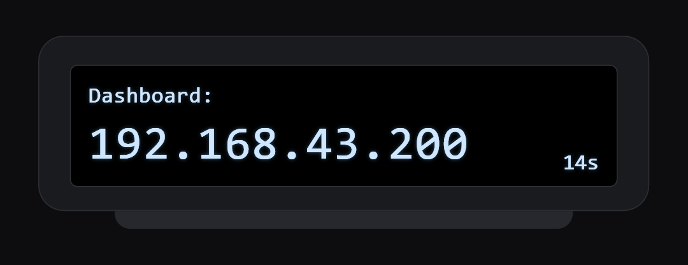
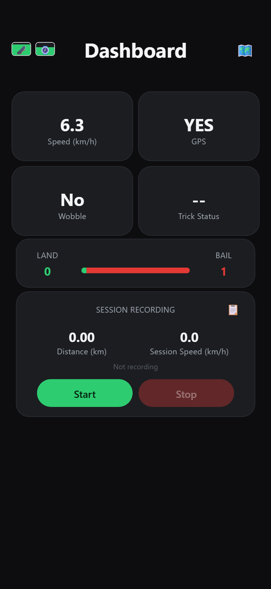
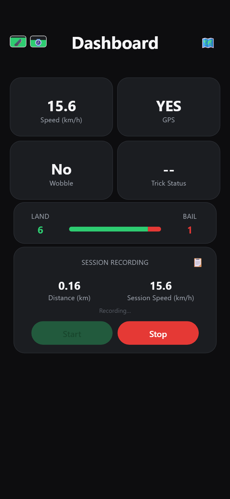
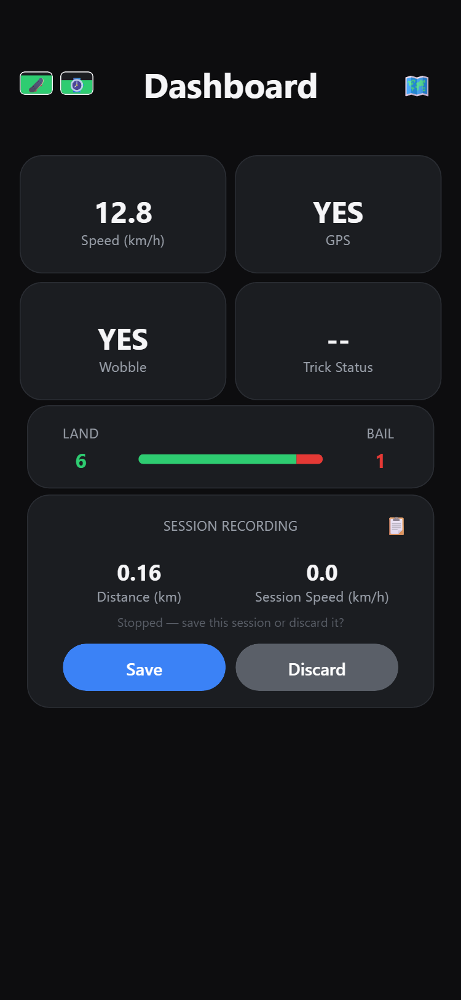
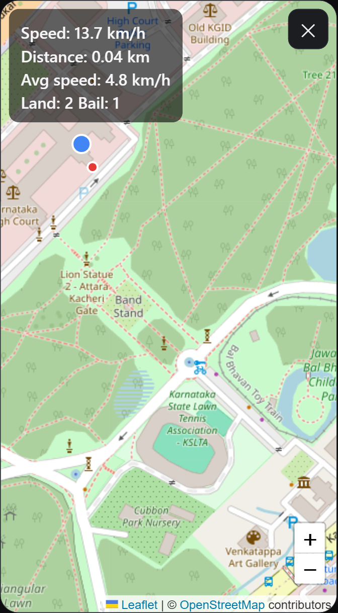
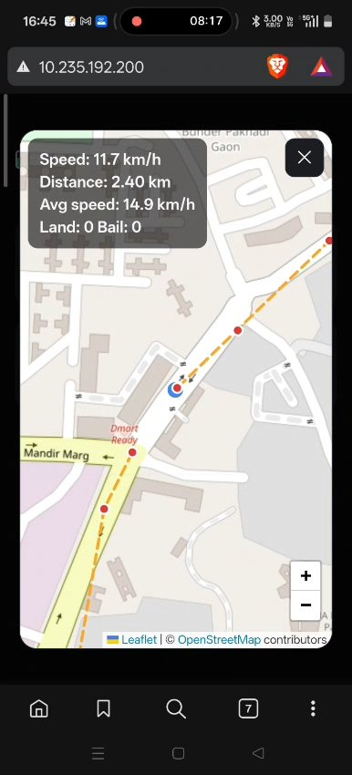
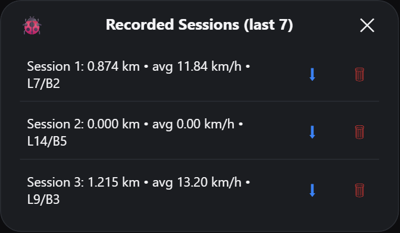
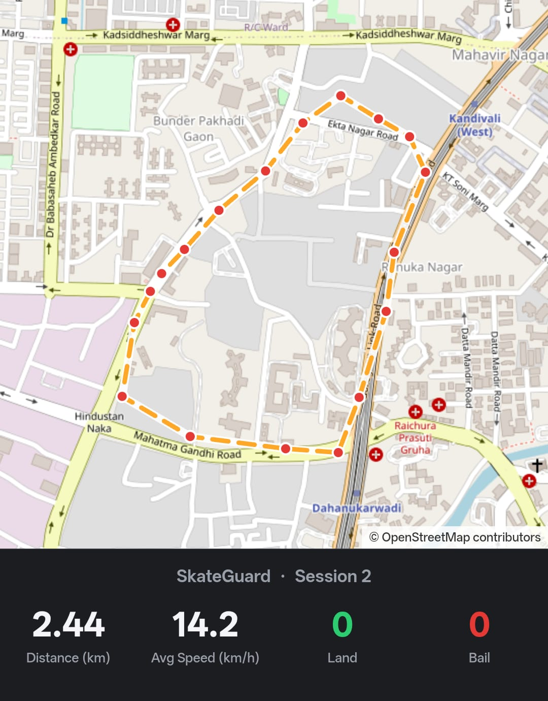
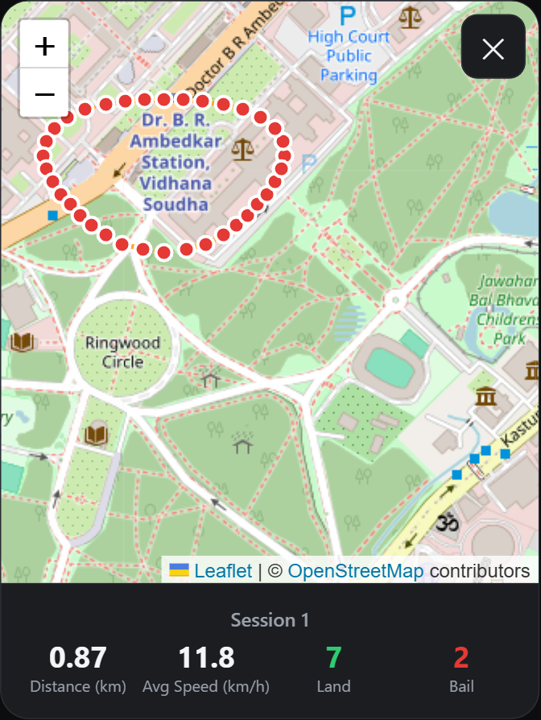
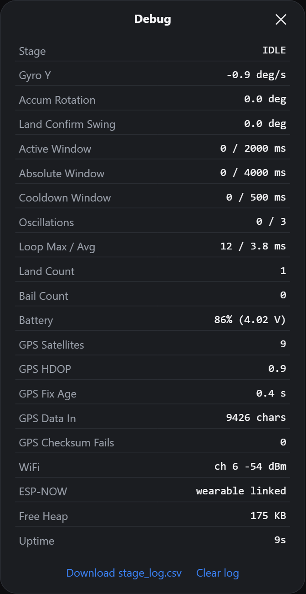

SkateGuard Dashboard Manual
Before you start
The dashboard is a web page the skateboard itself serves. Your phone only opens it, so nothing is installed and no internet plan is used.
You need four things:
- The board switched on, with the SkateGuard program already loaded.
- Your phone hotspot turned on. Its name and its password are both
12345678, which is the network the board looks for. - The wearable receiver powered on. It shows the dashboard address, so you can find it without a computer.
- Open sky, if you want speed, distance and maps. The board reports a GPS fix only with 4 or more satellites.
- Type the address the wearable shows into your phone browser. That opens the dashboard.

The wearable shows the address like this for 20 seconds after it finds the board. The small number counts down to when the screen goes back to your speed. This is a drawing of the screen, not a photo of your own wearable.
The map screens also need the phone to have internet, because map images come from OpenStreetMap. Everything else works with the hotspot alone.
Screenshots here come from a preview fed with sample ride data, so your numbers will differ.
Opening the dashboard
There is no login. The dashboard has no username, password or account, so any phone joined to your hotspot can open it, use the buttons and delete sessions. Your hotspot password is what keeps other people out.
- Turn on your phone hotspot. The board joins it on its own within a few seconds of power-up.
- Read the address from the wearable screen. It shows
Dashboard: 192.168.x.200for 20 seconds after the link comes up. A computer running Serial Monitor shows the same line. - Open that address in the phone browser, for example
http://192.168.43.200/. The last part is always.200, so only the first part changes between hotspots. - Tap Open Dashboard.
To skip typing the address next time, use the browser menu and choose Add to Home screen. The dashboard then opens full screen from an icon, like an app. The address stays valid as long as you use the same hotspot.
The dashboard screen
This is the screen you ride with. It refreshes twice a second, so the numbers move as you roll.

| Part of the screen | What it tells you |
|---|---|
| Speed (km/h) | Your GPS speed right now. Anything under 2 km/h reads 0.0, so a parked board does not drift. |
| GPS | YES once the board has a fix with 4 or more satellites. NO until then, and speed, distance and maps stay empty. |
| Wobble | YES while the board is detecting the speed wobble pattern. |
| Trick Status | LAND or BAIL appears for a moment after each trick, then goes back to two dashes. |
| LAND and BAIL bar | Counts since the board was switched on, with the green and red bar showing the split. |
| Session Recording card | Distance (km) and Session Speed (km/h) for the session being recorded. Session Speed is your live speed while recording and 0.0 when you are not. |
| Battery icons (top left) | The first is the board battery, the second the wearable's. The second stays grey until a wearable has been heard. |
| Map icon (top right) | Opens the live map. |
| Clipboard icon (on the card) | Opens Recorded Sessions. |
Every number here comes from the board itself. Closing the page or locking the phone does not stop the board counting tricks.
Recording a session
A session is one ride you keep. Tricks are counted all the time, but only a recorded session is saved with its distance, speed and route.
- Tap Start. Start fades out and only Stop stays bright, so you can tell at a glance that recording is on. The words under the card change to "Recording…".
- Ride. Distance and Session Speed climb, and the board saves one route point every 30 seconds.
- Tap Stop when you are done. Nothing is saved yet.
- Choose Save to keep the session, or Discard to throw it away.

After Stop, the card asks "Stopped — save this session or discard it?" and the two buttons swap in. Nothing is written to the board until you choose.

Save writes the session's distance, average speed, land count, bail count and route to the board. Discard leaves no trace. Either way the counters keep running for your next session.
The live map
The map icon at the top right opens your position on a map, with the ride numbers in the corner.

The four lines in the corner are your speed right now, the distance and average speed of the session being recorded, and the trick counts. On the map itself, the blue dot is where you are and the red dots are the route points saved during the session, joined by an orange dashed line.
The map follows you as you ride. Drag or zoom it yourself and following pauses for about 3 seconds, so it does not fight you while you look around. Zoom with the plus and minus buttons at the bottom right, and tap the cross at the top right to close.
Until the board has a fix, the map shows "Waiting for GPS fix…" instead. If the map stays blank grey, the phone has no internet for map images, though the board still records the ride.

The same screen on a real ride, 2.40 km in. The blue dot is on the road being ridden and the saved points trail behind it.
Recorded sessions
The clipboard icon on the session card opens everything the board has saved.

Each row reads Session 1: 0.874 km • avg 11.84 km/h • L7/B2, which is the distance, the average speed, then the land and bail counts for that ride.
Each row has three things you can tap:
- The row itself opens that session's route on a map.
- The download arrow saves the session to your phone.
- The bin deletes that session from the board.
The bin deletes straight away and asks nothing first, so tap it carefully. A deleted session cannot be brought back.
The board keeps the last 7 sessions. Saving an eighth deletes the oldest one, so download anything you want to keep. The small bug icon in the top left of this window opens the debug page.
The download arrow saves that session to your phone: its distance, average speed, trick counts and the positions along the route, ready to open in any spreadsheet. Sessions that have a route also save a picture of the route map. A session recorded without GPS, such as kickflip practice in one spot, saves the numbers only.

A map downloaded from the board after a real 2.44 km ride at an average of 14.2 km/h. The picture saves at this size, so it is readable on its own.
A saved session's route
Tapping a row draws where that ride went, with the session's numbers underneath.

The red dots are the saved route points and the orange dashed line joins them in order. Because a point is saved every 30 seconds, the line cuts corners on a fast lap. The strip below the map repeats the session's distance, average speed, lands in green and bails in red.
A session recorded with no GPS fix has nothing to draw, and shows "No route recorded for this session" instead. That is normal for practice in one spot.
Tap the cross at the top right to go back to the list.
The debug page
The bug icon inside Recorded Sessions opens the board's own readout, refreshed twice a second. Use it when a trick is not being counted or GPS will not lock.

| Row | What it means | What is normal |
|---|---|---|
| Stage | Where trick detection has got to: IDLE, ROTATING, LAND_CONFIRM or COOLDOWN | IDLE when the board is still |
| Gyro Y | How fast the board is turning now, in deg/s | Near 0 at rest |
| Accum Rotation | Rotation added up so far in this trick, in degrees | 0 at rest |
| Land Confirm Swing | Swing measured while confirming a landing, in degrees | 0 at rest |
| Active Window | Time used of the window a trick has to finish in | 0 / 2000 ms at rest |
| Absolute Window | Longest a single trick may take | 0 / 4000 ms at rest |
| Cooldown Window | Pause after a trick before the next is counted | 0 / 500 ms at rest |
| Oscillations | Wobbles counted against the number needed | 0 / 3 at rest |
| Loop Max / Avg | Slowest and average time round the board's main loop | A few ms. A max in the hundreds means the board stalled and can miss tricks |
| Land Count, Bail Count | The same totals as the front screen | Matches what you rode |
| Battery | Board battery percent and voltage | Roughly 4.2 V full, 3.4 V flat |
| GPS Satellites | Satellites the module is using | 4 or more. Fewer means no fix |
| GPS HDOP | How tight the fix is. Lower is better | Under about 2 outdoors |
| GPS Fix Age | Time since the last position line arrived | Under 3 seconds. Older means the position is stale |
| GPS Data In | Characters read from the GPS module since power-up | Always climbing. Stuck at 0 means a wiring or baud problem |
| GPS Checksum Fails | GPS lines that arrived damaged | 0, or a handful |
| WiFi | Hotspot channel and signal strength | Stronger than about -70 dBm |
| ESP-NOW | State of the radio link to the wearable | "wearable linked" |
| Free Heap | Memory still free on the board | Steady, not falling over time |
| Uptime | Time since the board was switched on | Resets to 0 after a reboot |
The two links at the bottom save the board's detailed motion log to your phone, or clear it. That log is wiped every time the board is switched on anyway.
If something goes wrong
| What you see | What to do |
|---|---|
| The address will not open at all | Check the hotspot is on and that its name and password are both 12345678. Give the board a few seconds after power-up, then read the address off the wearable again. |
| "Connection lost — retrying…" | The phone and board have lost each other. The page retries on its own. If it does not come back, check the hotspot and reload the page. |
| GPS stays NO | Go outside with clear sky. A board that has been off for days can take several minutes on the first fix. In the debug page, GPS Satellites should climb towards 4. |
| GPS Data In stuck at 0 | The board is hearing nothing from the GPS module. Check its wiring and that it is powered. |
| Speed reads 0.0 while you are rolling | Anything under 2 km/h is shown as 0.0 on purpose. If it stays 0.0 at speed, check GPS says YES. |
| The map is blank grey | The phone has no internet for map images. The ride is still being recorded. |
| The wearable shows NO SIGNAL | The board is off, out of range, or still starting. The address reappears on the wearable once the link returns. |
| A session is missing | Only the last 7 are kept, and saving a new one removes the oldest. Tapping Discard after Stop also saves nothing. |
| Land and Bail both show 0 | Normal until the first trick after power-up. |
If the numbers look wrong rather than missing, open the debug page first. Loop Max, GPS Fix Age and GPS Satellites explain most odd readings.
What the board keeps
Everything is stored on the board, not on your phone. Open the dashboard from a different phone and the same sessions are there.
| What the board keeps | Limit |
|---|---|
| Your saved sessions, each with distance, average speed, lands and bails | The last 7 |
| The route of each session | 20 points, one every 30 seconds |
| A detailed motion log, for working out missed tricks | Cleared every time the board is switched on |
There is plenty of room on the board, so you will reach the 7 session limit long before the space runs out.
A downloaded session opens in any spreadsheet app. It holds the ride's distance, average speed, land and bail counts, and the positions along the route, so you can map the ride yourself.
Sessions stay on the board when you switch it off. They are erased only if the board is reprogrammed with different memory settings.